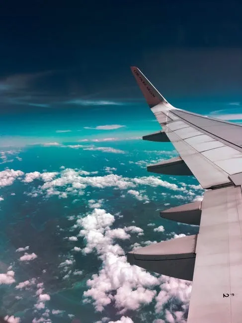
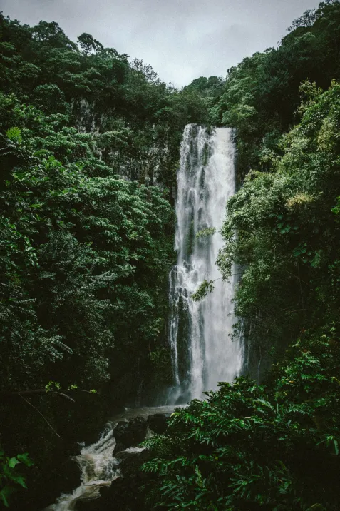
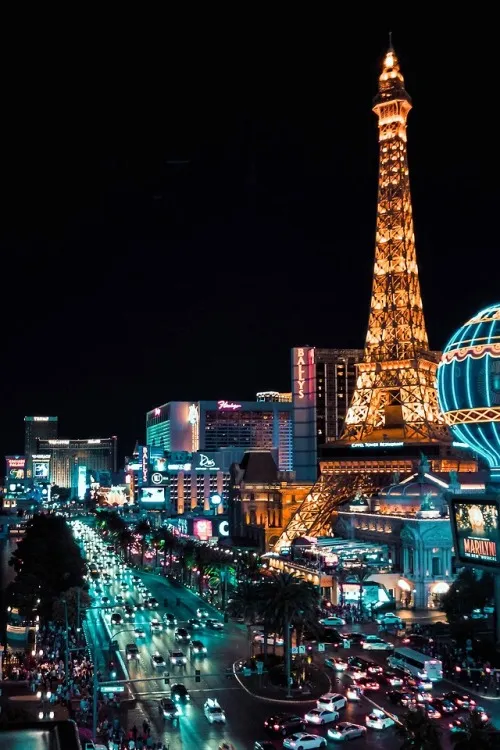
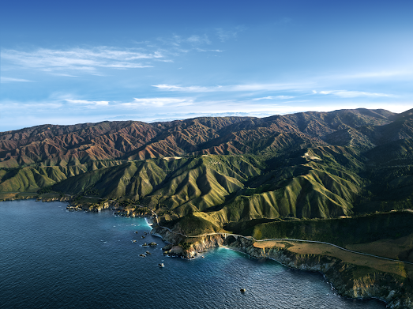
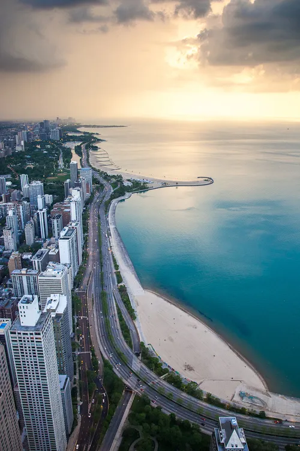
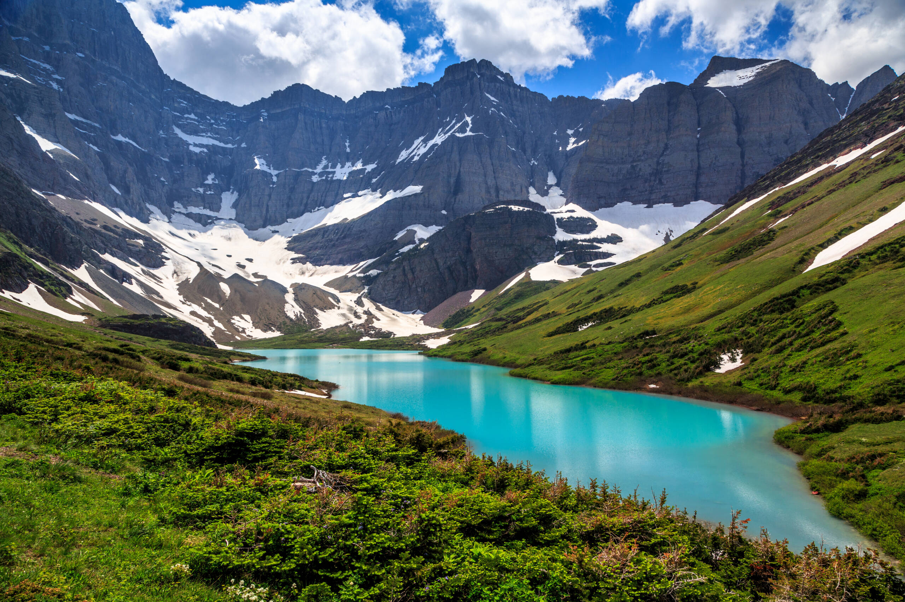
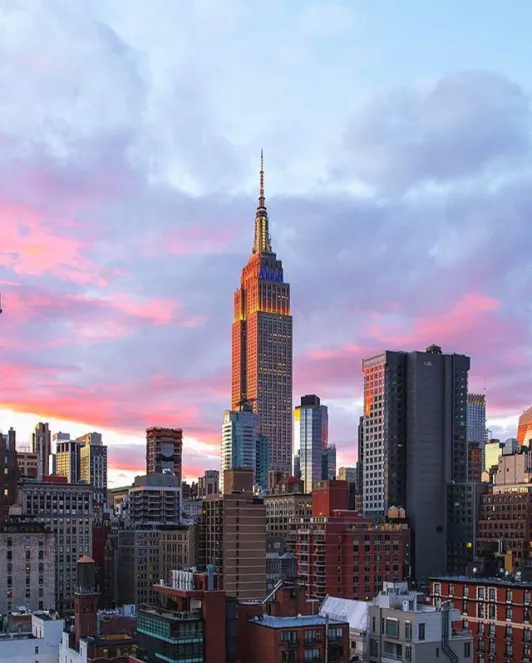
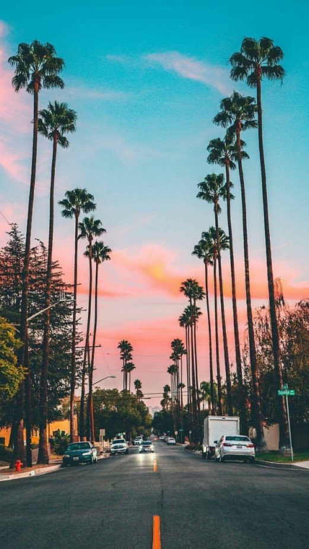

The United States has everything from huge snowy mountains to the most beautiful beaches. Whether you are into relaxing or exploring, you still will want to visit the extraordinary places below.
1. Maui, Hawaii
Looking to relax? There is no better place than Maui. Although Hawaii is a pretty expensive place to visit, it is so worth it. There is so much to see and do here. People say that seeing the sunrise at Haleakala National Park is like a religious experience. It was so popular that they had to make reservations online. The Road to Hana is an amazing driving experience. You will probably stop your car countless times to look at the rainforest, ocean views, waterfalls, and pools. Let me not forget to mention that the beaches span 30 miles of white, green, black and red sands. What other states have that? These crystal clear water will make you never want to leave. If you are interested in taking a boat out, there are many things you can see. You can experience whale watching or snorkeling.

2. Lake Tahoe, California
Lake Tahoe is another place that has a lot to offer. Tahoe is known for extremely clean environment from the air to the water. During winter, you can snowboard or ski at the numerous resorts. During summer, you can hike, boat, fish, hike, biking, and wakeboard. Golfing is a very popular pass time there. This is one of the places where you probably wouldn’t want to relax but stay active.
3. Las Vegas, Nevada
21+ and looking for a party? I’m sure that you will find yourself at Las Vegas. Las Vegas is known for its incredible nightlife. You can spend your time gambling at casinos, relaxing (or partying) at the pool, dancing all night at a nightclub, etc. Just head to the all night at a nightclub, etc. Just head to the Strip and you will find everything that you are looking for. If you are looking to get out of the city, you can take ATV tours, all night at a nightclub, etc. Just head to the hike in Red Rock Canyon, or visit the Hoover Dam.

4. Big Sur, California
You can find Big Sur on Pacific Coast Highway in California. It stretches 90 miles between Monterey Bay and San Simeon. Big Sur consists of redwood trees and cliffs that overlook the Pacific Ocean. The Big Sur community really tries to connect with nature. There is little cell phone service, so you have no choice but to enjoy the natural beauty. If you camp here, locals desire that there was no trace when you leave. Most people who stay here recommend that you stay at least two nights. If you don’t want to camp, there are many hotels that have stunning views of the ocean and hillside.

5. Miami, Florida
Miami is in south Florida and is known for being a melting pot with all the cultures. If you are looking for hot weather all year round, head to Miami. It rarely drops below 75 degrees. If humidity bothers you, visit during the winter months because that is when it is usually at the lowest. Like Las Vegas, you can party all day and all night. Many celebrities hit up LIV, Mynt, STORY, and Baoli for the best parties. Miami has an extensive range of art whether it is public installations or at museums. If you are going with your family, you can go to the beach. But there are beaches that are party beaches, so be careful which one you go to.

6. Glacier National Park, Montana
Montana is usually not on the top of people’s list to visit but you absolutely need to see this amazing national park. You can go ice fishing, snowshoeing, boating and hiking. During winter, people tend to go cross-country skiing. Summer consists of rock climbing and biking. Animals are a big attraction here. You can find eagles, wolves, bighorn sheep, and bears. It is advised to get a tour guide when you go on a hike to avoid any run-ins with these animals.

7. New York City, New York
Interested in fashion, art, or theater? New York City is the place for you. NYC holds some of the best museums and art galleries in the world like the American Museum of Natural History. Another big attraction is Broadway. You must see a show while you are there. You can get tickets now to see “The Music Man”, “Wicked”, “The Lion King”, “Moulin Rouge! The Musical”, and many more. When you think of New York City, do you think of the beautiful skyline? Well, you are able to go to the top of skyscrapers and look at the amazing view. The most well known skyscrapers you can visit is the Empire State Building and the Chrysler Building. Lastly, I can’t forget to bring up the food. New York City is a huge melting pot, which means the options for good food are endless. There are 23,000 restaurants in the city, so you definitely won’t go hungry.

8. Los Angeles, California
Los Angeles is definitely somewhere that has endless activities for you to do. First off, you can go to several amusement parks like Universal Studios and Six Flags. Second, you can shop around at Rodeo Drive or just Beverly Hills in general. Next, you can hike around on several beautiful trails or walk the beach. You can head to Venice Beach, which is one of the most famous beaches in the United States. Fourth, you can go party the night away at a nightclub or go see a concert. Lastly, a lot of people try to go sightseeing. Well, not just any kind of sightseeing but where you can see where movies have been filmed or where celebrities live. This is just a few things that you can do in LA but I assure you that there is much, much more.

9. New Orleans, Louisiana
New Orleans is known best for Bourbon Street, where everyone (21+) gets drunk and parties. A fun time to go to Bourbon Street is during Mardi Gras. The streets smell like beer but it is a great time. Another attraction in New Orleans is their live music. It is the birthplace of American jazz, so you have to go to the spring Jazz Festival which brings aficionados from all over the world. Next, some people go for the thrill and spooky part of New Orleans. You can head out on ghost tours where they tell you scary stories and take you various place where things “went down.” Lastly, you can go out to the bayou (which is just outside the city) on a boat tour and see alligators and wild boar.
10. Yosemite National Park, California
Yosemite is a national park in Northern California that has serene waterfalls, amazing wildlife, clear skies, and hiking unlike anywhere else. There are five waterfalls that fall about 1000 feet. The best time to see them is during late spring when the snow melts. Next, you can find owls, deer, fox, sheep, and bears on your hikes so be careful. Speaking of hiking, if you aren’t even a big hiker, I got you covered. You can take a two hour open air tram tour instead and see all the beauty from a higher altitude. Lastly, the skies are so clear there especially because there is no light pollution so you can stare out at the sky during summer nights and star gaze.